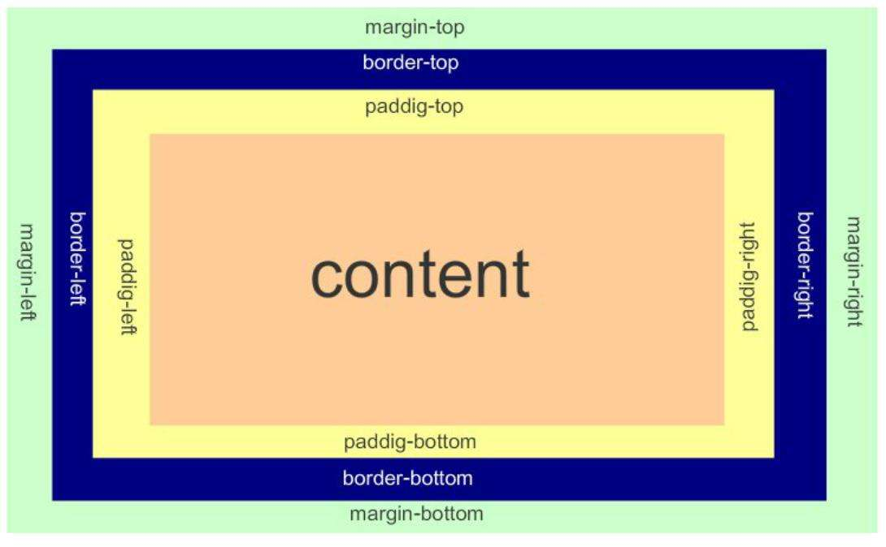
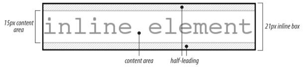
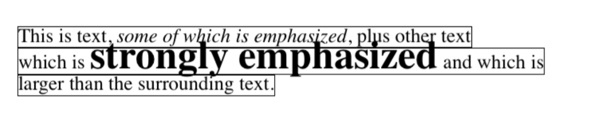

RSS
RSS写在前面的话
本文大部分来源《CSS权威指南》和张鑫旭大神的部分思想。本文只针对CSS基础。
快速复习
正常流
从左到右，从上到下显示，也是我们熟悉的传统的HTML文档布局。
非替换元素
如果元素的内容包含在文档中，则称为非替换元素。
替换元素
是指用作为其他内容占位符的一个元素。典型的例子就是img。
块级元素
这是指段落、标题或者div之类，这些元素在正常流中，会在其框之前和之后生成”换行“，所以处于正常流中的块级元素会垂直摆放。
行内元素
这是指strong或者span之类的元素。这些元素不会在之前和之后生成”换行“，它们是块级元素的后代。
根元素
HTML中就是html
块级元素

一般的，一个元素的width就是content的宽。height是content的高。
水平格式化
首先一个简单的规则，正常流中的块级元素框的水平部分总和就等于父元素的width。
水平属性：margin-left、border-left，padding-left，width，padding-right，border-rigth，margin-right
这七个属性的值加起来必须是元素包含块的宽度，往往是父元素的width。
使用auto:如果设置margin-left，margin-right，width的一个值为auto，余下的两个值为特定的值，那么设置auto的属性会确定所需的长度，从而使元素框的宽度等于父元素的宽度。举个例子：
1 | /*父元素的宽为400px*/ |
如果三个都设置了为非auto的值，margin-right将强制为auto，例如：
1 | /*父元素的宽为400px*/ |
如果设置width为auto，另外两个为特定的值，width将计算为所需要的值。
不只一个auto: width为特定的值，其他两个是auto，其他会计算为相等的长度。所以元素会水平居中。
1 | /*父元素的宽为400px*/ |
将某个外边距以及width设置为auto，设置为auto的外边距将计算为0，width会填充父元素，例如
1 | /*父元素的宽为400px*/ |
如果三个都为auto会怎么样，很简单，这是默认情况。外边距都为0，width会填充父元素。
注意：水平边距不会合并。
负外边距：外边距可以为负值。举个例子
1 | /*父元素的宽为400px*/ |
注意：内边距，边框，宽度不能为负数。只有外边距。
百分数：width，内外边距设置为百分数，会应用相同的基本规则。百分数的计算根据父元素的宽度。
替换元素：非替换元素的所有规则适用于替换元素，只有一个例外，如果width为auto，元素的宽度将为内容的固有宽度。如果设置width为特定的值，height会成比例的变化。
垂直格式化
一个元素的默认高度由其内容决定。可以显示的设置高度，指定高度小于显示的内容所需的高度，浏览器的具体行为取决于overflow的值。其他的特别情况，稍后讨论。
垂直属性：margin-top，border-top，padding-top，height，padding-bottom，border-bottom，margin-bottom
这七个属性的值加起来必须是元素包含块的高度，往往是父元素的height。
在正常流中，如果一个块元素的margin-top，margin-bottom设置为auto它会自动计算为0。也就不能垂直居中。
百分数：height的值为百分数，根据父元素的高度计算。内外边距根据父元素的宽度计算。
垂直外边距重叠：垂直相邻的外边距将会合并，举个例子：
1 | li{ |
然而列表之间距离是15px，不是25px。垂直相邻的外边距中，较小的会被较大的合并。
注意：重叠不止发生于相邻的同级的元素。还会发生在父子元素之间。父元素如果有padding，和border将不会重叠，例如：
1 | ul{ |
ul的外边距将为：15px。
负外边距：如果重叠时，两个元素都为负值，取绝对值最大的。一正一负，正减去负的绝对值。
行内元素
首先回顾一些行内布局的基本术语。
匿名文本：是指所有未包含在行内元素中的字符串，例如<p>I am <em>so</em> happy</p>,I am 和 happy就是匿名文本。
em框：也称为字符框，font-size的值确定各个em框的高度。
内容框：在非替换元素中就是em框。在替换元素中，内容区就是元素的固有高度加上可能有的外边距。
行间距：font-size和line-height的差。行间距只应用于非替换元素。
行内框：内容区增加间距来描述，对于非替换元素，元素行内框的高度刚好等于line-height的值。对于替换元素，元素行内框的高度恰好等于内容区高度。
行框：包含该行中出现的行内框的最高点和最低点的最小框。
注意：非替换元素的内外边距对行内元素或者其生成的框没有垂直效果，也就是说他们不会影响元素行内框的高度。替换元素就会影响。
行内非替换元素
1 | p{ |

假如有以下标记:
1 | <p style="font-size: 12px; line-height: 12px;"> |
在本例中,所有的line-height都是12px,虽然strong指定为24px,但是根据line-height的可继承性,strong的line-height也是12px，对于font-size和line-height都是12px的每段文本,内容高度不会改变,所以行内盒的高度是12px.但是,对于strong文本,line-height和font-size的差是-12px.这个差分成两半确定半间距,然后半间距分别加到内容高度的上、下部,就得到行内盒.
因为行间距是负数,所以内容区域会比行内盒大
由于行内盒决定了整个行盒的高度,其相互位置是很重要的.行盒被定义为行中最高的行内盒的顶端到最低的行内盒的底部之间的距离,并且每个行盒的顶部挨着上一行的行盒的底部
下图中,匿名文本的行内盒决定了行盒的底部,同时,strong元素的行内盒的顶部则设置行盒的顶部.
因为行内盒的顶部是在strong元素的内容区内,所以该元素的内容就溢出到行盒的外面,从而实际上与其它行盒重叠了

line-heigth
单位可以是固定的px，也可以是相对的em和百分数，是相对于font-size计算。
在继承问题中，当一个元素从其父元素继承line-height时，值是从父元素计算，而不是子元素计算。例如：
1 | body{ font-size: 10px;} |
可以指定一个数，由它设置缩放因子。子元素会根据自己的font-size计算。
1 | body{ font-size: 10px;} |
增加框属性
内外边距和边框不会影响行框的高度。
行内元素的边框是由font-size控制的而不是line-height。例如：span元素的的font-size:12px，line-height:36px，其内容区域就是12px高，边框包围该内容区域。
设置左右外边距会将文本推离其左右两端。为负数则会拉近。
行内替换元素
一般认为行内替换元素有固有的高度和宽度。比如图片。但是不会影响任何元素的line-height。行框高度会恰好包含替换元素。
增加框属性
内外边距和边框会影响行框的高度。
说回margin,padding
不强调常规的用法，在这里的强调的是当设置的值为百分数时候，不论左右上下，统统根据父元素的width计算。例如
1 | .parent { |
关于浮动
简单说一下容易忽略的细节。
浮动元素会生成一个块级框，而不论这个元素本身是什么。
类似这样的
1 | <div class="parent"> |
1 | .child{ |
会使父容器高度塌陷为0，可以这样清除浮动
1 | .parent { |